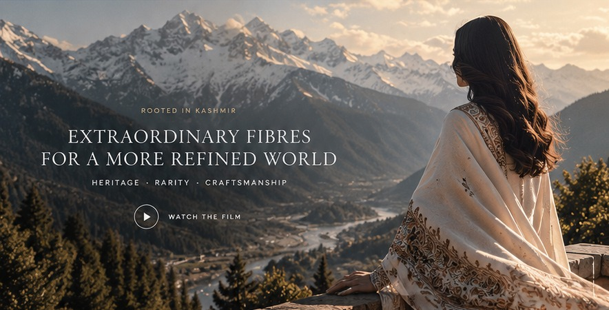
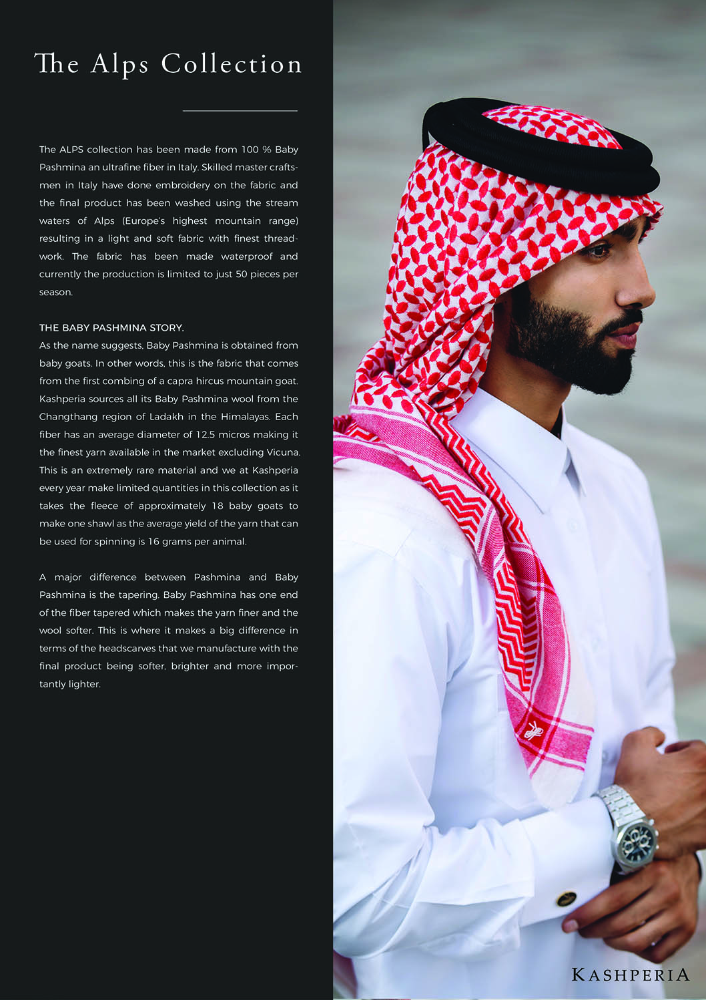
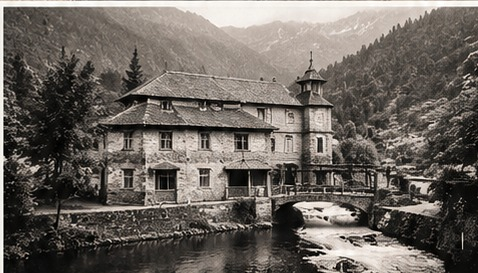
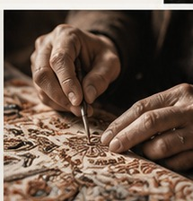
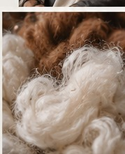
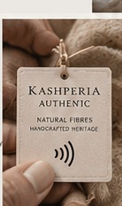
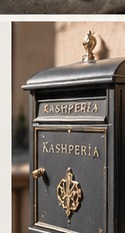

Rare by Nature.
Exceptional by Craft.
Destined for Generations.
A heritage to honour.
A future to create.
What makes a creation exceptional is not simply its beauty, but the people, places and principles that give it meaning.

Where Rarity Meets Artistry
Kashperia is a luxury maison founded on an enduring appreciation for exceptional materials, refined design and the art of craftsmanship.
At the heart of our vision and philosophy lies a simple belief: true luxury is defined not by extravagance, but by the rarity of its materials, the integrity of its creation and the timelessness of its design.
Our collections bring together the finest natural fibres, distinctive artistic traditions and contemporary creativity. Every creation is conceived with a commitment to individuality.

In the hands of masters.
At Kashperia, craftsmanship is more than a tradition. It is a living heritage, preserved through generations and expressed through the extraordinary skill of master artisans.
The Maison brings together exceptional craftsmanship from Kashmir, Italy and Switzerland, uniting centuries-old textile traditions with a contemporary vision of luxury.
Our creations are shaped by artisans whose knowledge has been refined over generations.

Nature's finest
expressions.
At the heart of the Maison lies an enduring pursuit of the world's most exceptional natural fibres, selected for their rarity, provenance, fineness and distinctive character.
From the remote highlands of Kashmir and Mongolia to the finest cotton-growing regions of the Caribbean and the renowned wool-producing landscapes of Australia, our materials reflect a world of natural excellence.
Each fibre is chosen not merely for its beauty, but for its ability to be transformed through exceptional craftsmanship into a creation of lasting distinction.

Collections for every generation.
Discover a world of shawls, fabrics, ghutra, apparel, fragrance and thoughtful gifts.
A private world
of rarity.
Access by invitation only.
KASHPERIA PRIVÉ is Kashperia’s private destination for bespoke commissions, rare creations and exceptional pieces selected for a discerning circle of members.
Membership is extended exclusively through an introduction or reference from an existing KASHPERIA PRIVÉ member, or by a direct invitation from Kashperia.
A mark of true origin.
Every Kashperia creation is accompanied by a form of authentication appropriate to the product. Depending on the collection, this may include an individual identification number, an authenticity certificate, a distinctive security label or another recognised form of product identification.

A life shaped by beauty.
BEYOND KASHPERIA extends the relationship with the House beyond its creations, offering KASHPERIA PRIVÉ members opportunities to discover exceptional sporting occasions in Europe and meaningful cultural experiences.
Personal Stylist & Design Team
CLIENT SERVICES<br>Considered<br>attention.
Personal shopping, gifting, private enquiries and guidance from our dedicated team.
